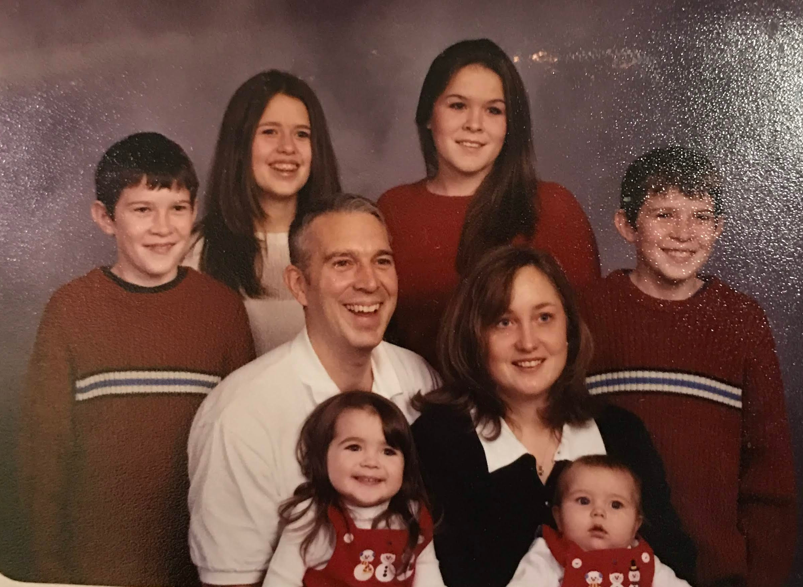
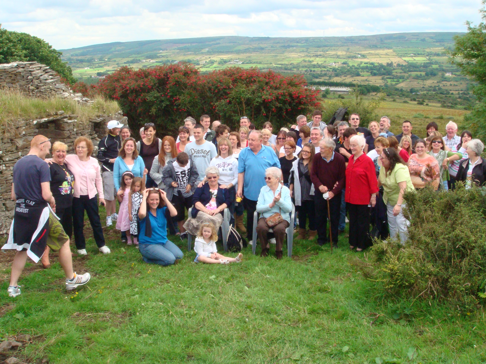
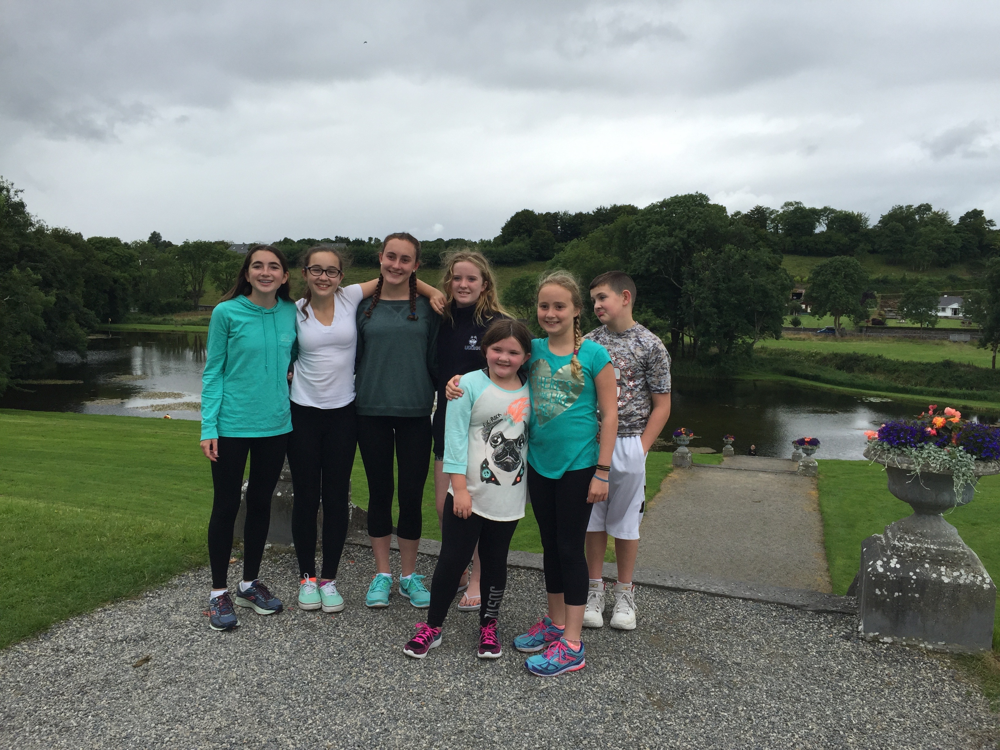

I have a very large family. I am the youngest of 6 kids. My oldest sister is named Lexi and she is 34. She has a husband and two daughters named Juniper and Rose. My second oldest sister is Vicky who is 32 and has two sons named Brycen and Grady. I have two twin brothers named Nick and Max who are 31 years old. My third oldest sister is 21 and Katie is currently a 4th year student at Syracuse University.
Every four years my family takes a trip to Ireland for a family reunion. During this reunion we visit my grandmothers house that is now one wall of scattered rocks. We also visit her old school which was called Prizon or Prison East. One year we jumped over the fence and looked inside the school and in the bathrooms. It is a very fun trip and gets my moms side of the family together, since some of them live overseas. Our next trip is hopefully planned for Summer of 2024.
 